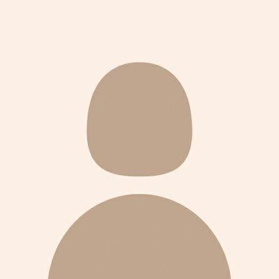
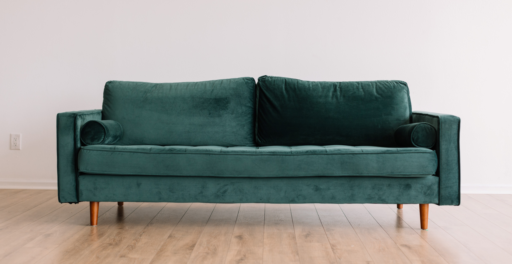
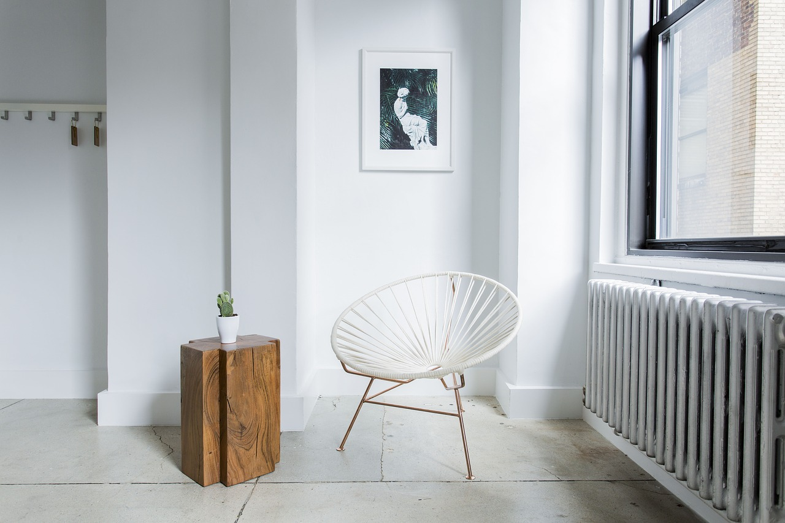

About Author
Photo of me:
Nama : Najwa Aulia Saphana
Tanggal Lahir : 09 Juli 2003
Pendidikan : Sistem Informasi, Universitas Jambi
Fast Link
Ayo Kenali Kami Lebih Dalam
Sofa
Memilih sofa untuk rumah baru, atau sekadar membuat tampilan ruang tamu Anda lebih fresh? Temukan jawaban dari keduanya dalam ragam koleksi sofa fungsional disini.
Meja

Tidak hanya fungsional, meja juga bisa menambah unsur dekoratif pada sebuah ruangan. Temukan meja yang sesuai dengan fungsi dan style yang Anda inginkan.
Kursi
Hadirkan kursi yang tidak hanya sekedar menjadi tempat duduk, namun juga yang dapat memberikan kenyamanan selama menjalani berbagai aktivitas.